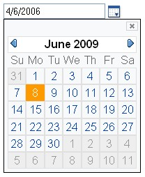
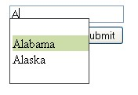
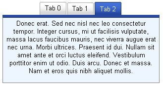

| Name | YUI Plugin |
|---|---|
| Publisher | Musachy Barroso |
| License | Open Source (ASL2) |
| Version | 0.1-ALPHA-7 |
| Compatibility | Struts 2.1.6+ |
| Homepage | http://code.google.com/p/struts2yuiplugin/ |
| Download | http://code.google.com/p/struts2yuiplugin/downloads/list |
| Rating? |

|
Overview
YUI plugin provides tags based on the Yahoo! User Interface Library (YUI).
Get Started With Five Easy Steps
Step One
Download the latest version of the YUI plugin and place the jar file in the WEB-INF/lib directory of your web application.
Step Two
Add the following taglib directive to your JSP pages:
<%@ taglib prefix="yui" uri="/struts-yui-tags" %>
Step Three
Add class="yui-skin-sam" to the <body> tag of your JSP pages:
<body class="yui-skin-sam">
Alternatively, you can wrap each YUI widget you use with a <div> tag that specifies the CSS class. For example:
<div class="yui-skin-sam"> <yui:datepicker id="datepicker" name="date.picker" value="%{'2006-10-20'}" /> </div>
Step Four
Add the <yui:head> element in the <head> section of your JSP pages. You must add the <yui:head> element for each widget that you want to use on the page. For example, if you want to use the datepicker, your head section should look something like this:
<head> <title>YUI Date Picker Example</title> <yui:head datepicker="true" /> </head>
If you want to use both the datepicker and the autocompleter in a page, the head section of that page would look like this:
<head> <title>YUI Date Picker Example</title> <yui:head datepicker="true" tabview="true" /> </head>
Step Five
Finally, add the appropriate YUI tag for the widget within your JSP page. For example:
<body class="yui-skin-sam"> ... <yui:datepicker id="datepicker" name="date.picker" value="%{'2006-10-20'}" /> ... </body>
Tags
head
This tag includes required javascript and css files. For each tag there will be an attribute on the head tag, which needs to be set to true, in order to use that tag. This will make sure that only required files are included on the page. For example, to use the datepicker tag:
<head> ... <yui:head datepicker="true"/> ... </head> <body> ... <yui:datepicker id="datepicker" name="datepicker" value="%{'2006-10-20'}" /> ... </body>
Tag Attributes:
| Attribute | Description | Required | Default Value |
|---|---|---|---|
| datepicker | Include datepicker tag required files | no | false |
| autocompleter | Include autocompleter tag required files | no | false |
| tabview |
Include tabview tag required files |
no |
false |
| cssreset |
Include YUI Reset CSS file |
no |
false |
| cssfonts |
Include YUI Fonts CSS file |
no |
false |
| cssgrids |
Include YUI Grids CSS file |
no |
false |
| cssbase |
Include YUI Base CSS file |
no |
false |
| languages | Comma delimited list of language names to be loaded(supported languages are: 'de', 'it', 'es', 'fr') | no | Language of the request |
datepicker
|
 |
This tag is based on YUI Calendar.It can be rendered in 3 different ways, which are controlled by the mode attribute:
The datepicker tag adds a hidden field to the page which will be used by Struts. The value of this field is in RFC3339 format. Values entered on the visible input (when mode="input") are synchronized with the hidden field. The initial value can be set from the stack, using the value attribute. This value can be of type java.util.Date(recommended), java.util.Calendar. If the value is an string, the the following formats will be used while trying to parse it:
|
Please not that this is the format of the string used in the value attribute, not the display format, which is always MM/dd/yyyy and can be customized using the formatFunction attribute.
Using a value from the stack:
<yui:datepicker id="datepicker" name="datepicker" value="date"/>
Using an string value:
<yui:datepicker id="datepicker" name="datepicker" value="%{'2006-10-20'}"/>
Using 'today' constant:
<yui:datepicker id="datepicker" name="datepicker" value="%{'today'}"/>
The current value is always displayed in the format MM/dd/yyyy (when mode is either 'label' or 'input'). To customize this behavior, a function name can be specified in the formatFunction attribute. The value returned from this function will be shown on the input o the label. This value is not the one that is used by Struts. When the page loads, if an initial value was set for the datepicker tag, the function will be called with that value as an String parameter. When the user selects a value (or types into the input) from the datepicker the function will be called with the selected date as a Date parameter.
The following example displays the selected value in the format yyyy.MM.dd:
<yui:datepicker id="datepicker" name="datepicker" value="%{'2006-10-20'}" formatFunction="format"/> <script> function format(dt) { if(YAHOO.lang.isString(dt)) { var parts = dt.split("/"); var month = parts[0]; var day = parts[1]; var year = parts[2]; return year + "." + month + "." + day; } else { var month = dt.getMonth(); var day = dt.getDate(); var year = dt.getFullYear(); return year + "." + month + "." + day; } } </script>
By default the language defined in the request will be used on the datepicker. Supported languages are 'en'(default), 'de', 'es', 'it', 'fr'. Use the language attribute to specify a different(from the request) language.
Example using Italian:
<yui:head datepicker="true" languages="it" /> <yui:datepicker id="datepicker" name="datepicker" language="it"/>
YUI's calendar supports internationalization. To use a locale that is not supported(please consider contributing the resource names for inclusion in the plugin) see YUI's documentation .
Example using i18n on German:
<yui:datepicker id="datepicker" name="datepicker" value="%{'2006-10-20'}" /> <script> YAHOO.util.Event.addListener(window, "load", function() { YAHOO.datepickers.datepicker.cfg.setProperty("MONTHS_SHORT", ["Jan", "Feb", "M\u00E4r", "Apr", "Mai", "Jun", "Jul", "Aug", "Sep", "Okt", "Nov", "Dez"]); YAHOO.datepickers.datepicker.cfg.setProperty("MONTHS_LONG", ["Januar", "Februar", "M\u00E4rz", "April", "Mai", "Juni", "Juli", "August", "September", "Oktober", "November", "Dezember"]); YAHOO.datepickers.datepicker.cfg.setProperty("WEEKDAYS_1CHAR", ["S", "M", "D", "M", "D", "F", "S"]); YAHOO.datepickers.datepicker.cfg.setProperty("WEEKDAYS_SHORT", ["So", "Mo", "Di", "Mi", "Do", "Fr", "Sa"]); YAHOO.datepickers.datepicker.cfg.setProperty("WEEKDAYS_MEDIUM",["Son", "Mon", "Die", "Mit", "Don", "Fre", "Sam"]); YAHOO.datepickers.datepicker.cfg.setProperty("WEEKDAYS_LONG", ["Sonntag", "Montag", "Dienstag", "Mittwoch", "Donnerstag", "Freitag", "Samstag"]); }); </script>
As you might have noted on the example above, for each calendar an object is created on th global scope with the name YAHOO.datepicker.id where "id" is the id of the date picker.
| For each calendar an object is created on th global scope with the name YAHOO.datepicker.id where "id" is the id of the date picker. For the date picker: <yui:datepicker id="dp" name="dp" value="%{'today'}"/> The object YAHOO.datepickers.dp will be created on the global scope. |
| Attribute | Description | Required | Default Value |
|---|---|---|---|
| id | is used in the JavaScript object name that will be created for each datepicker | yes | none |
| name | name that will be used on the hidden field containing the date value in RFC3339, used by Struts | yes | none |
| value | Initial value. Read from the Value Stack, use %{'2007-10-09'} format for string literals | no | none |
| formatFunction | Function called on page loads(value is passed as an String parameter), and when user changes the selected value(value is passed as a Date object). The returned value will be used on the input or label | no | none |
| autoClose | Close datepicker when a date is selected | no | true |
| startDate | First enabled date on calendar | no | none |
| endDate | Last enabled date on calendar | no | none |
| cssClass | css class applied to the input or label | no | none |
| cssStyle | css style applied to the input or label | no | none |
| language | Name of language to be used (two lowercase characters), supported languages are 'de', 'es', 'fr', 'it'. If the language is not the one defined on the request, it needs to be specified on head also | no | 'en' |
| Using 'input' mode When using the 'input' mode, the value entered on the input is assumed to be on the format MM/dd/yyyy, if it isn't on that format, the value won't be parsed and will be copied verbatim to the hidden field, which Struts won't probably be able to parse. Tip: Use String fields on your action when using 'input' mode, and define your own converter. |
autocompleter
 The autocompleter tag creates the YUI AutoComplete control which provides the front-end logic for text-entry suggestion and completion functionality. See the Yahoo! UI Design Pattern Library description for AutoComplete to get a fuller sense of the underlying design patterns in the AutoComplete family.
The autocompleter loads a list of options from a url that returns a JSON string in the following form:
{
"results": [
{
"key":"AL",
"value":"Alabama"
},
{
"key":"AK",
"value":"Alaska"
}
]
}
The JSON Plugin can be used to generate this JSON string. The following example shows how:
The Action
package org.apache.struts2.showcase.ajax; import com.googlecode.struts2yuiplugin.json.AutocompleterResult; import com.opensymphony.xwork2.Action; import com.opensymphony.xwork2.ActionSupport; public class AjaxTestAction extends ActionSupport { private String state; private String stateKey; private String query; public String execute() { //state an stateKey will have the selected values return Action.SUCCESS; } public String loadOptions() { return Action.SUCCESS; } public AutocompleterResult getOptions() { AutocompleterResult result = new AutocompleterResult(); if (query.equals("A")) { result.add("AL", "Alabama"); result.add("AK", "Alaska"); } return result; } public void setState(String state) { this.state = state; } public void setStateKey(String stateKey) { this.stateKey = stateKey; } public void setQuery(String query) { this.query = query; } }
The mapping:
<package name="yui" namespace="/nodecorate" extends="json-default"> <action name="AjaxTest" class="org.apache.struts2.showcase.ajax.AjaxTestAction"> <result type="json"> <param name="root">options</param> </result> </action> </package>
|
The JSP:
<%@ taglib prefix="yui" uri="/struts-yui-tags" %> <%@ taglib prefix="s" uri="/struts-tags" %> <html> <head> <yui:head autocompleter="true" /> </head> <body> <s:url id="statesUrl" namespace="/nodecorate" action="AjaxTest" includeParams='none'/> <s:form namespace="/nodecorate" action="AjaxTest.action"> <yui:autocompleter id="state" name="state" href="%{#statesUrl}" containerCssStyle="width:100px" /> <s:submit /> </s:form> </body> </html>
| Attribute | Description | Required | Default Value |
|---|---|---|---|
| id | is used in the JavaScript object name that will be created for each autocompleter | yes | none |
| name | name of the input | yes | none |
| cssClass | css class applied to the input | no | none |
| cssStyle | css style applied to the input | no | none |
| containerCssClass | css class applied to the input | no | ysearchcontainer") |
| containerCssStyle | css style applied to the input | no | none |
| href | URL used to load the options. Accepts a literal value, for a value from the Value Stack use the _%{#url}_notation | no | none |
| keyName | Name of the key field | no | ${name}Key |
| dataFieldName | Full patch of the field that has th array with the options in the JSON returned from the request, like field1.field2 | no | results |
| resultsLimit | Limit how many results are shown as autocompletion options | none | 10 |
| loadMinimumCount | Minimum number of characters that will force the options to be loaded | none | 1 |
| delay | Delay(in seconds) before making query to load options | none | 0.5 |
| autoHighlight | Autohighlight first element on the list | none | true |
| useShadow | The dropdown will have a shadow, the CSS class for the shadow is 'yui-ac-shadow' | no | false |
| forceValidOption | Force selection to be one of the options | none | false |
| autocomplete | Warning: This behavior seems to have a few bugs on YUI's implementation. Will make suggestions on the input based on the text entered by user | none | false |
tabview and tab
 The tabview and tab tags are used together to create a TabView widget. Currently, only very basic TabView support is implemented.
JSP Example
<yui:tabview id="myTabView"> <yui:tab id="tab0" label="Tab 0"> <p>This is Tab 0 content</p> </yui:tab> <yui:tab id="tab1" label="Tab 1"> <p>This is Tab 1 content</p> </yui:tab> <yui:tab id="tab2" label="Tab 2"> <p>This is Tab 2 content</p> </yui:tab> </yui:tabview>
Installation
This plugin can be installed by copying the plugin jar into your application's /WEB-INF/lib directory. No other files need to be copied or created.
Version History
| Version | Date | Author | Notes |
|---|---|---|---|
| 0.1-ALPHA-4 | Jun 22, 2007 | Musachy Barroso | Add autocompleter tag |
| 0.1-ALPHA-3 | Jun 20, 2007 | Musachy Barroso | Add support for i18n, 'de', 'es', 'fr', 'it'. Fix RFC bug |
| 0.1-ALPHA | Jun 19, 2007 | Musachy Barroso | Initial release |